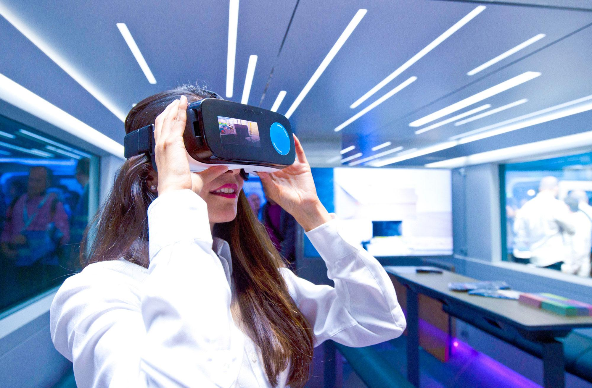
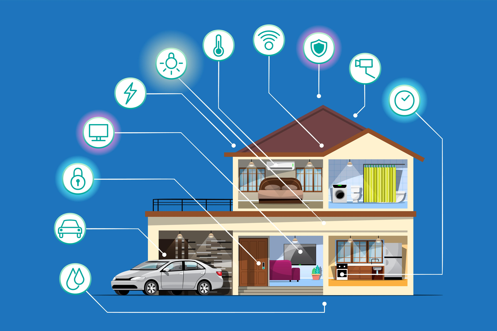

Inteligencia artificial
Permitirá crear páginas y aplicaciones más inteligentes, capaces de ofrecer respuestas y servicios personalizados.

 IMPACTO WEB
IMPACTO WEB
Tecnologías web en la sociedad y los negocios
Las tecnologías web continúan evolucionando y transformando nuestra forma de interactuar con el mundo digital. En los próximos años, herramientas como la inteligencia artificial, la realidad virtual y el Internet de las cosas tendrán un papel cada vez más importante en nuestra vida cotidiana. Estos avances permitirán desarrollar experiencias digitales más inteligentes, conectadas y personalizadas.
Permitirá crear páginas y aplicaciones más inteligentes, capaces de ofrecer respuestas y servicios personalizados.
Ofrecerá nuevas formas de interactuar con entornos digitales mediante experiencias inmersivas e interactivas.

Permitirá conectar diferentes dispositivos a Internet para intercambiar información y realizar tareas de manera automática.

Las plataformas podrán adaptar sus contenidos y recomendaciones según los intereses y necesidades de cada usuario.
El desarrollo de las tecnologías web seguirá abriendo nuevas oportunidades para la sociedad y los negocios. Adaptarnos a estos cambios será fundamental para aprovechar sus beneficios y enfrentar los desafíos del mundo digital.